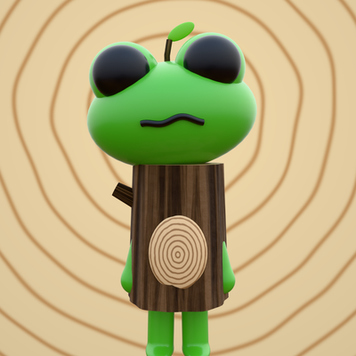
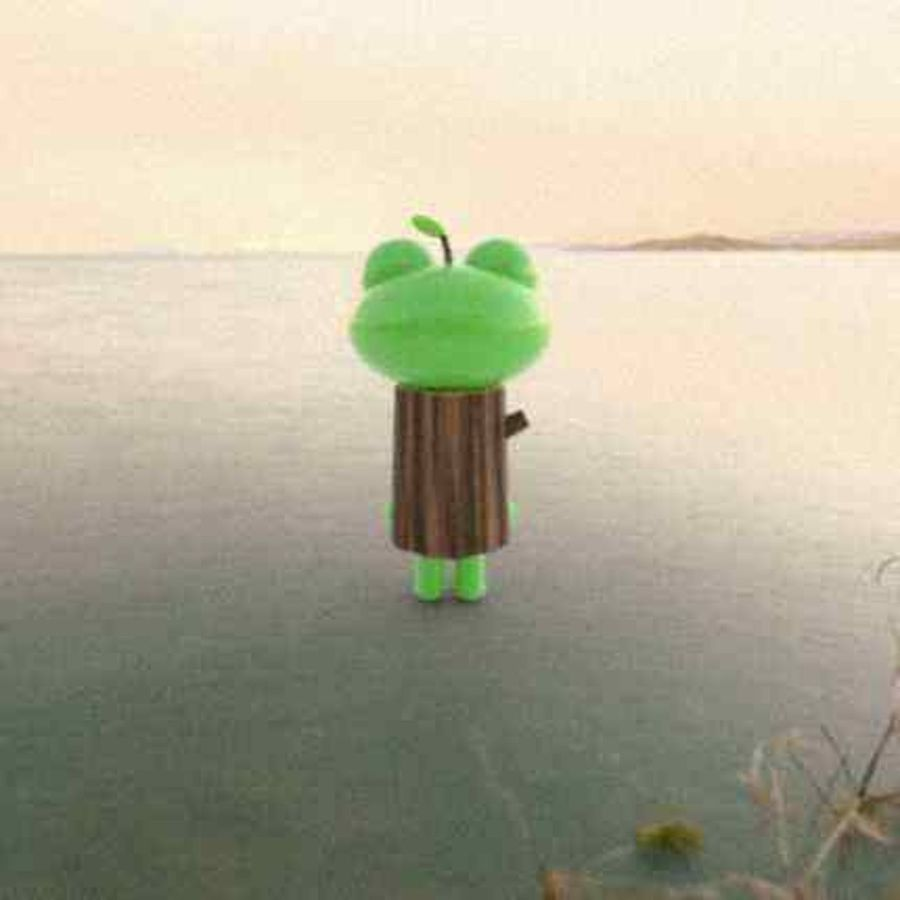
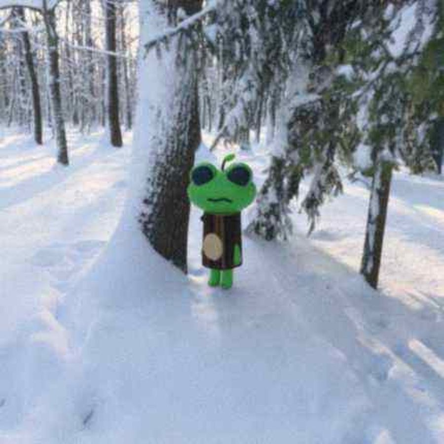

CHAPTER 1
CHAPTER 1
the sit
a normal frog bought a coin and sat on a log to watch the chart. it dipped. he kept sitting.

FLOG buy $FLOG// case file 001
flog was a normal frog. he bought a coin and sat on a log to watch the chart.
the chart dipped. he kept sitting. it pumped. he kept sitting. it did nothing for a week. he kept sitting.
doctors call it lignification (a real botany word: going woody). hold long enough and you turn into wood. his hands are wood now. he tried to press sell. the button didn't move. he is at peace with it.
it's not the first time. in the old fable, the frogs asked for a king and got a log. it never did anything. best king they ever had.
logs don't sell.
logs don't leave.
logs just stack up.
// the lignification
CHAPTER 1
a normal frog bought a coin and sat on a log to watch the chart. it dipped. he kept sitting.

CHAPTER 2it starts at the belly. one ring. then the hands. then bark grows up to the neck. he didn't notice. he was watching the chart.

CHAPTER 3he tried to press sell. the button didn't move. he tried again. still wood. a leaf came out of his head. that means it's done.
 CHAPTER 4
CHAPTER 4
now he runs the sawmill. every fee the coin earns gets cut into a log and stacked on the pile for 70 years.
diamond hands
wooden hands
diamond hands break. wood just sits.
hodl (2013) → diamond hands (2021) → wooden hands (now). paper is wood that gave up halfway.
// the archives
flog didn't invent any of this. frogs, logs and people who won't let go go back a long way. every note has its source.
the frogs asked zeus for a king. he threw down a log. it never moved, so they mocked it and asked for a real one. they got a water snake. it ate them. vote log.
source: the frogs who desired a kinga real frog that freezes solid for up to 8 months. no heartbeat. then it thaws in spring and hops off. flog's cousin. he's seen worse charts.
source: national park servicesailors threw a piece of wood on a knotted rope off the ship, counted the knots, and wrote it in the log-book. the first log book was an actual log. so is this one.
source: chip logpeople who took petrified wood from a forest in arizona mail it back with apology letters. the returned wood is called the conscience pile. the pile remembers.
source: petrified forest national parka tree usually adds one ring a year. some years it grows no ring at all. it just sits there. respect. you don't have to cut flog down to count his rings. they're on chain.
source: dendrochronologyin the old game of tag, if you were touching wood you couldn't get caught. flog is always touching wood. he is wood.
source: knocking on woodin british slang, to flog something means to sell it. flog has never flogged.
source: wiktionaryfive little speckled frogs sat on a speckled log. four jumped in the pool. one stayed. he's the log now.
source: the rhymesomeone typed "i am hodling" and it stuck. then came diamond hands. now wooden hands. diamonds can be sold. wood can't.
source: hodl// the sawmill
pump.fun pays the coin's creator a small fee on every trade. flog doesn't keep any of it. it all goes into the sawmill: a bot that never sleeps and has no hands at all.
creator fees from $FLOG trading build up. the sawmill claims them to the fee wallet every 5 minutes.
once about 2 SOL has stacked up, 100% of it buys $FLOG straight off the market. that's one log. the only cut is Streamflow's fee for each lock.
the log goes on the pile: a Streamflow token lock for 70 years, the longest Streamflow allows. nobody can cancel it. every step goes in the flog log.

the pile is empty. the first log goes on after the first ~2 SOL of fees.
// count the rings
flog's belly is a tree ring. every lock on the pile adds one more. count his rings, count the locks. hover a ring to read it. tap it to open its lock.
no logs yet. next milestone: a stick, at 1 log.
// public record
the first log book was an actual log: sailors threw it off the ship and wrote down what it said. this one works the same way. every fee claim, buyback and lock, written down by the sawmill. don't trust the frog. check the log.
| # | date | fees claimed | $FLOG bought | locked until | proof |
|---|---|---|---|---|---|
| 000 | no logs yet. the pen is ready. | ||||
// proof, not promises
a bot runs the sawmill, not a person. it claims, buys and locks on its own and every step lands on chain. here's where to look.
flog-keeper memo.
THE PILE
Streamflow
each log is its own Streamflow token lock: unlock date 70 years out (Streamflow's maximum), cancel and transfer turned off for everyone, including us. locked wallets show up tagged LOCKED in Axiom's holders list. the pile unlocks in 70 years. it's not for us.
// recovered footage
tapes play when they're on screen. no sound. logs don't talk.
// found photos
flog keeps getting photographed standing still in places he shouldn't be. nobody knows who takes them. he is always just standing there. like a log.
// put flog anywhere
drop in any photo. stick flog in it. drag him, pinch him, spin him, flip him. make it look found. nothing leaves your browser.
drag to move · corner handle or two fingers to size + spin
1. the place
2. add flog
3. the selected flog
4. the look
// diagnosis
six questions. the doctor will see you now. results are final. there is no cure.
// make one
pick a sighting, write something, post it. flog can't stop you. he's a log.
// join the pile
drop your profile pic in. it comes out as a fresh-cut log with a leaf on top. welcome to the pile. nothing gets uploaded anywhere.
// take them
tap one to save it. reply to a buyback post with one. knock on wood.
// questions
pump.fun pays a small cut of every $FLOG trade to the coin's creator. normally the dev keeps it. here it goes to the fee wallet, and the sawmill spends all of it on buybacks.
fees get claimed into the fee wallet. once enough builds up, all of it buys $FLOG on the open market and the $FLOG is locked straight away. the only things taken out are network fees, Streamflow's fee for each lock, and a tiny reserve the wallet keeps to pay for transactions.
not for 70 years. each log gets its own Streamflow token lock with the unlock date set as far out as Streamflow allows (70 years, around 2096), and cancel and transfer turned off for everyone. every row in the flog log links straight to its lock on Streamflow so you can check it yourself. there's an old story about a man who planted a tree that wouldn't fruit for 70 years, because someone once planted one for him. same idea. it's not for us.
every Streamflow lock costs a fixed fee in SOL plus a small cut of the tokens. locking tiny amounts would waste most of it on fees. so the sawmill claims every 5 minutes, lets the SOL stack up, then buys and locks in one go once there's about 2 SOL (or once a day if there's at least 1 SOL). the bar in "the sawmill" shows how close the next log is.
so you can see it. a lock shows up as a real pile you can count, tagged LOCKED on Axiom, with every log on chain. burned tokens just disappear. you can't count the rings of something that's gone.
when you hold long enough, you turn into wood. it starts at the belly, then the hands, then the neck. a leaf means it's done. it's not a real medical condition. it's a meme. take the quiz anyway.
every lock on the pile adds a ring to flog's belly. the rings in "count the rings" and the rows in the flog log are the same number. they come from the same place.
the only known paperhand threat. he keeps trying to eat the pile. he can't. it's locked for 70 years.
the fees just wait in pump.fun until it runs again. nothing gets lost. the pill at the top of the page shows whether the bot is online and when it runs next.
no. it's a log.
// how